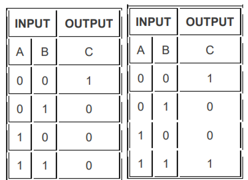
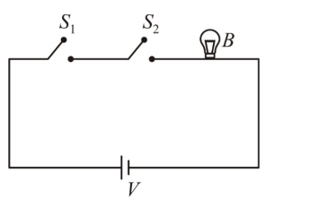
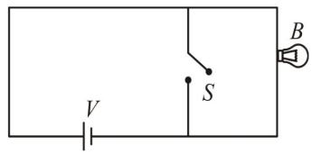
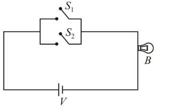
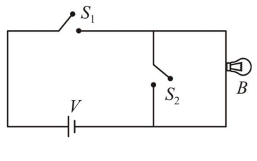
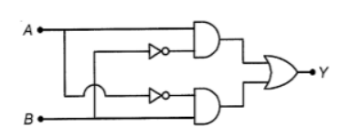

Start
Name of the School
Email (Not required)
Q1: Who is the father of Artificial Intelligence?
A. Doug Cutting
B. John McCarthy
C. William S.
D. Rasmus Lerdorf
Q2: What are the main goals of AI?
A. To Create Expert Systems
B. To Implement Human Intelligence in Machines
C. Both A and B
D. None of the Above
Q3: Which is not the commonly used programming language for AI
A. PROLOG
B. LISP
C. Javascript
D. Perl
Q4: Ways to achieve AI in real-life are_________.
A. Machine Learning
B. Deep Learning
C. Both A & B
D. None of the above
Q5: The 2’s complement of binary number 1010 is ___________
A. 0101
B. 1010
C. 0110
D. 1110
Q6: The output of a logic gate is 1 when all the input are at logic 0 as shown below

The gate is either _________
A. a NAND or an EX-OR
B. an OR or an EX-NOR
C. an AND or an EX-OR
D. a NOR or an EX-NOR
Q7: Which of the following are known as universal gates?
A. NAND & NOR
B. AND & OR
C. XOR & OR
D. EX-NOR & XOR
Q8: which one of the following represents an analog circuit diagram for OR gate?




Q9: For the logic circuit given below the output Y for A=0,B=0 and A=1,B=1 are,

A. 0 & 1
B. 0 & 0
C. 1 & 0
D. 1 & 1
Q10: How many minimum number of NOR gates are required to obtain an AND gate?
A. one
B. two
C. three
D. five
Q11: Write the html code of the following snapshot?
Submit